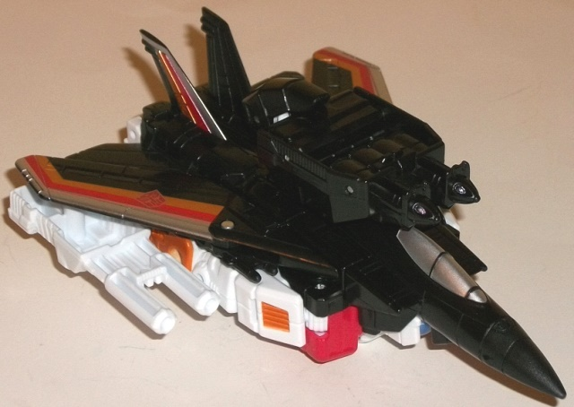
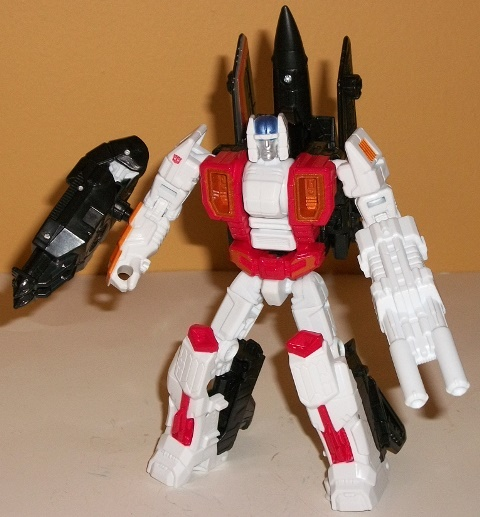
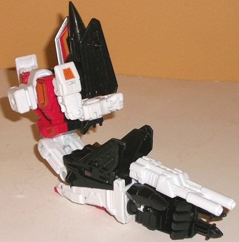
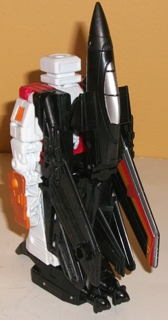

Allegiance
: Autobot
Size
: Deluxe
Difficulty of Transformation to Robot:
Easy
Difficulty of Transformation to Leg
:
Very Easy
Difficulty of Transformation to Arm
:
Very Easy
Color Scheme
: Black, white, red,
and some silver, blue, light metallic silvery blue, and dull metallic orangish
bronze
Rating
: 8.3


Air Raid's alternate
mode is-- you guessed it!-- a jet. In terms of his design he's very similar
to the other deluxe Combiner Wars Aerialbots-- that is, his vehicle mode
(when looked at from the top) has great proportions, but the robot mode
is pretty much all on the underside, making the jet considerably bulkier
than it should be. At least the robot parts all tend to tuck into a rectangular
area underneath the bottom of the jet mode, but it's still definitely noticeable--
the arms in particular. Where Air Raid's jet mode tends to differ most
obviously from his Aerialbot brethren is that his main wings can rotate
front-to-back-- their default position is "swept back" so they almost appear
to connect to some of the tailfins, but you can rotate them forward to
give him a wider wingspan. The downside to this is that if you do so, it
makes his lower arms much more obviously stick out from the back half of
the jet. Additionally, Air Raid has three 5mm ports for weapons-- one is
on the top center of this mode, but the other two are on the underside
of the main wings near the tips, and storing them down there when the wings
are rotated forward looks a bit odd, as the weapons are a bit large compared
to the wings. Air Raid's color scheme is pretty good-- he's predominantly
black in this mode, but the white and red from his robot does show through
a bit and help give some contrast to this mode while also helping Air Raid
blend in better color-wise with his fellow Aerialbots. Additionally, the
three stripes on the main wings and the vertical tail fins-- of silver,
red, and dull orange-- look fantastic, and really help Air Raid look a
bit more distinct from his Aerialbots as a result. The silver paint on
the cockpit also helps break up the black a bit more, as well.
Air Raid's transformation
is pretty much just unfolding his robot parts from the underside while
angling back and "compressing" his jet parts behind his back and lower
legs-- hardly original, but for robot mode it largely works. Air Raid's
angled wings allow them to sit up behind his back with his nosecone, which
aesthetically looks more appealing to me than wings sticking out of the
side of the main body. Other than that, though, Air Raid is very much like
his fellow deluxe jet Aerialbots-- in fact, he's SO similar some parts
are re-used from
Skydive
, though it's not
enough parts where I'd consider Air Raid a "remold" of Skydive-- too much
as has been changed, overall. However, the legs are carried over in their
entirety, as are Air Raid's weapons-- his hand/foot/gun weapon with the
two missiles molded on the end, and his double-barreled cannon (white this
time instead of black like on Skydive). All of the other parts are different.
Air Raid's proportions are a bit less bulky than Skydive's, with his shoulders
not quite as wide compared to his main body, which itself is less tapered
down to the stomach, giving a more angular "square" appearance for his
arms and main body. His arms are rather thick, but in a good way-- not
so much that they look out-of-place on an otherwise average jetformer.
The sculpting is generally pretty good-- Air Raid has all the usual "lines"
up and down his jet parts that you'd expect from a jetformer, and in this
mode the two mechanical detail sections on the sides of his chest that
are painted dull orange go well with his red, though I wish the paint for
them was a bit shinier. The FACEsculpt is pretty good, with a fairly neutral
expression on Air Raid's face, but his helmet looks a bit too chunky and
curvy-- it should have been refined slightly more. Air Raid's white and
red shows through a lot better in this mode, and I like the color layout
considerably better here, with there being adequate amounts of both red
and dull orange on the white sections to keep Air Raid from looking too
"one-tone". The red on the knees and lower feet, the silvery blue and silver
on the face, the dull orange on his shoulder vent-like details and on the
sides of his arms-- all the paint apps look good, are well spaced out,
and contrast quite well with the surrounding colors. The sole exception
to this rule is the little dull orange paint apps on the waist-- they tend
to "blend in" with the red, being as small as they are and not as large
and noticeable as the orange paint on the sides of his chest. Of course,
the black also contributes to Air Raid's colors, but it's more of a secondary
color, relegated the jet parts on his back. For articulation, Air Raid
can move at the neck (it's a ball joint, but up-down movement is restricted
a bit because of the headsculpt), and at the shoulders (at two points),
elbows, waist rotation, and movement at the hips (at two points), and knees.
The shoulder and hips in particular are quite well-articulated, though
I wish his feet could tilt a bit at the ankles. He's still got excellent
balance and can get into a great many poses, though.


Like most other aspects
of his design, Air Raid's arm mode follows the Aerialbot norm and is closer
to his robot mode configuration than his vehicle mode configuration, with
the lower half of the body forming the lower arm while the upper body forms
the combiner shoulder. The robot legs form together to make an excellent
lower arm, just like with Skydive. The combiner peg is on the other end
of the rotating piece in his chest that also has his robot head, so rotating
it out hides his head adequately in this mode. His jet mode bits on the
shoulder are in their robot mode configuration-- with the wings folded
up, this helps them "blend in" with the nosecone in terms of silhouette,
and in this respect I believe Air Raid beats out his fellow jet deluxe
Aerialbot molds in this mode because of this. That said, the regular robot
arms are REALLY darned obvious, made even more obvious because they're
white plastic against black in this mode. They're just rotated backwards
at the elbow, and they peg into the sides of the combiner shoulder via
rectangular slots, which honestly don't hold the robot arms all that well,
but said robot arms have strong enough joints to keep them in place regardless.
For articulation in this mode, Air Raid can move at the shoulder (at two
points), elbow (at two or three points, depending on whether the robot
knees are facing forward or not), wrist, thumb (at two points), and at
the base of his four fingers (all moving as one joint).
Air Raid's leg mode
is pretty much his jet mode with the nosecone and wings folded back, with
the robot head rotated down into the body while the combiner peg is rotated
upwards in its place. The "core" of this leg mode looks pretty good, with
the wings all folded up together pretty well to form a solid black rectangular
form that most definitely looks like a leg. The main wings can also be
folded up to give the knee more "bulk" or they can be folded down to give
the area above the ankle more bulk-- your choice, and it's a choice I rather
like for a bit more customization. All this said, this mode does have two
big extras, and they're that (again) the robot arms are just really darned
obvious, even partially folded into the body as they are. Given that they
both stick out from the main black "rectangle" that is supposed to be the
bulk of the leg mode and are white and orange as opposed to black, they
stick out pretty badly. That said, at least they peg in solidly and don't
flail around or anything. Air Raid has the same articulation as all other
Combiner Wars deluxes in leg mode-- his foot can rotate, and the knee joint
can move at two points.
Air Raid largely follows
the typical deluxe Aerialbot "formula", with the only notable difference
being how his wings can fold up in both modes. As such, he's got pretty
much the same pros and cons-- a solid, articulated robot mode, decent appendage
modes, and a jet mode that looks good from the top but has a lot of undercarriage
kibble. He's not spectacular or mind-blowing in his transformation, but
he gets the job done and looks good with the other Aerialbots, along with
having a nice color scheme. Recommended, particularly if you want to get
the other Aerialbots, though I think
Firefly
pulls off this general design a bit better.
Pre-mission psych-screening report
by Rung, Autobot Psy-Ops Specialist
:
Air Raid has heard about fear, but never
met him personally. A courageous and borderline-reckless warrior, Air Raid
likes nothing better than barreling into a squadron of Decepticons at full
speed with weapons blazing and spirit soaring. His fearless fighting style
occasionally gets him into trouble, but he's saved his teammates far more
often with instant acts of tremendous valor. His double-barreled torque
rifle causes sudden disorientation and instant loss of balance to his enemies--
a tremendous weapon, especially in airborne combat. With fellow Aerialbots
forms Superion.
CONCLUSION: Cleared for mission.
HISTORY (extracted from compulsory
biographical download):
Air Raid is the youngest of the Aerialbots,
but his daredevil decisions aren't born from inexperience or bravado--
he simply cannot stop himself from diving in headfirst. Having a jet mode
is the best possible option, as nothing else would enable his combat impulses
so perfectly. Forms either an arm or leg of Superion, the combined form
of the Aerialbots.
Review by Beastbot